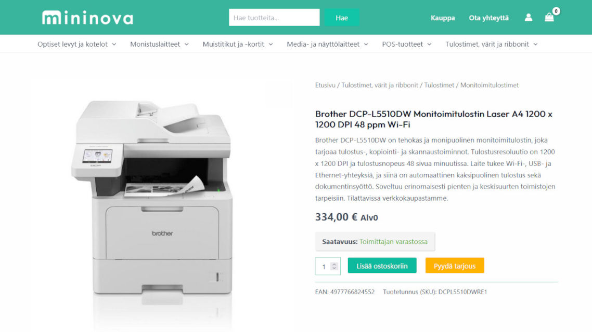
Suunnittelemani ja toteuttamani POS-tuotteiden verkkokauppa, johon rakensin toimittajien rajapinnat, hinnoittelujärjestelmän sekä tekoälyä hyödyntäviä työkaluja.
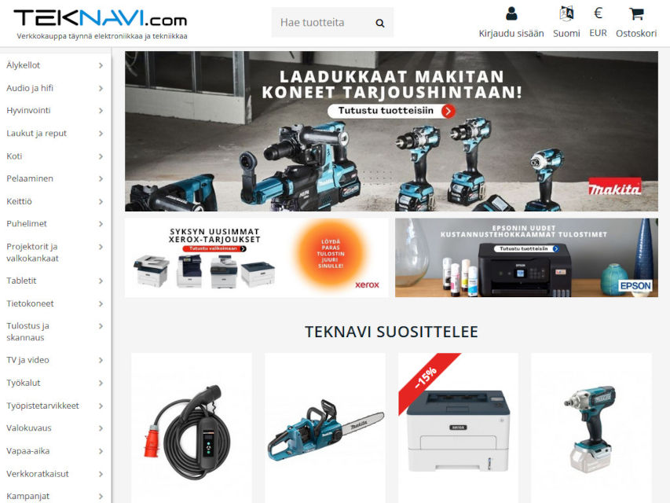
Ylläpidin yritykselle useita verkkokauppoja, joihin rakensin myös rajapinnat reskontrajärjestelmiin, hinnoittelujärjestelmän sekä työkaluja suuren tuotemäärän ylläpitämiseen.
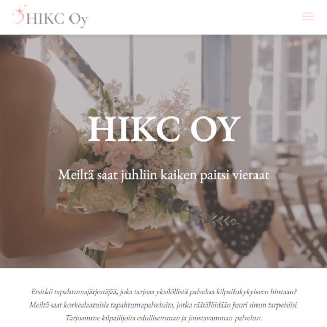
Tapahtumajärjestäjän verkkosivut, joissa voi varata juhlien suunnittelun ja toteutuksen sekä mahdollisuus vuokrata huonekaluja omia tapahtumia varten.
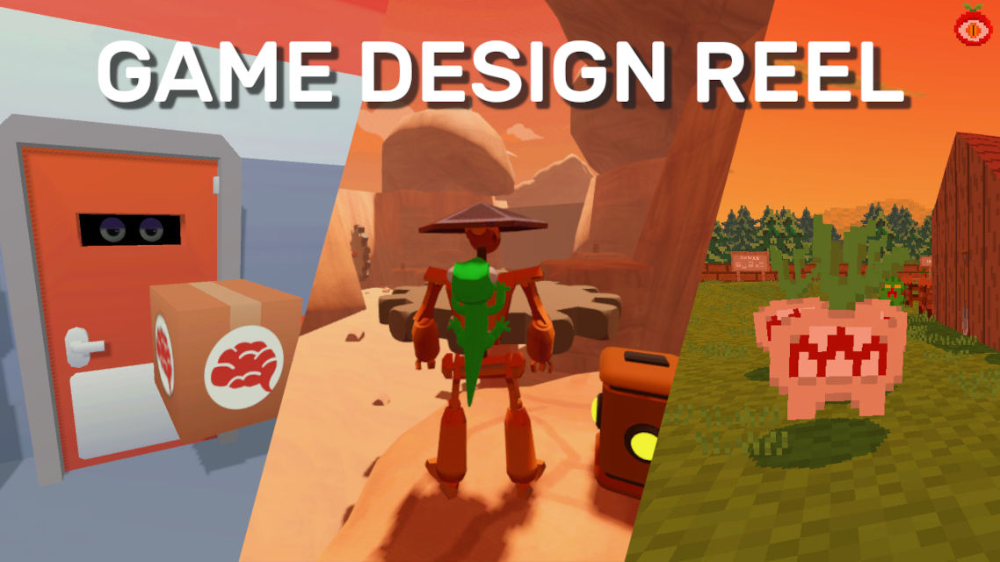
Videokooste parhaista peleistäni vuosilta 2022-2025.
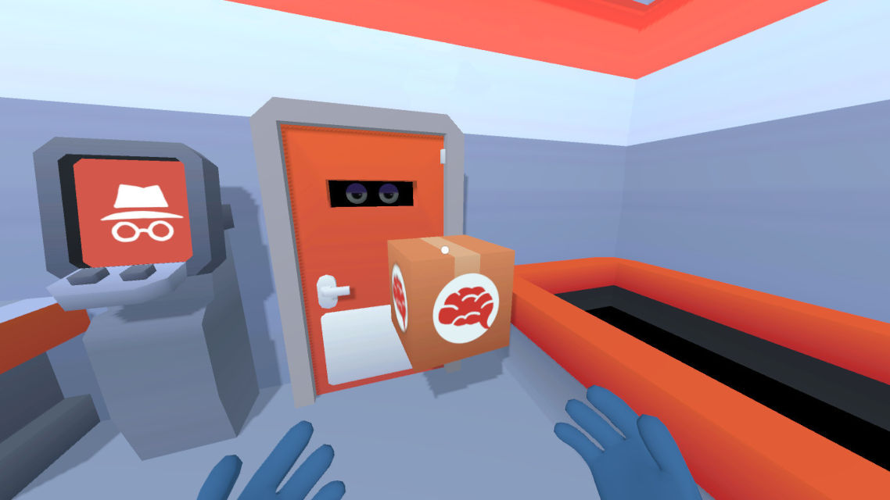
Humoristinen ensimmäisen persoonan peli, jossa pakataan liukuhihnalta elinluovuttajien osia pahvilaatikkoihin.
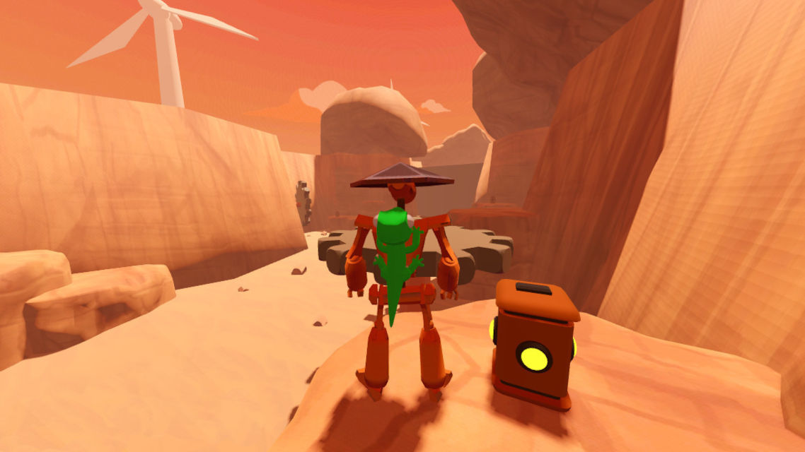
Pulmia sisältävä tasohyppelypeli, jossa puhelias lisko pitää pelaajalle seuraa.
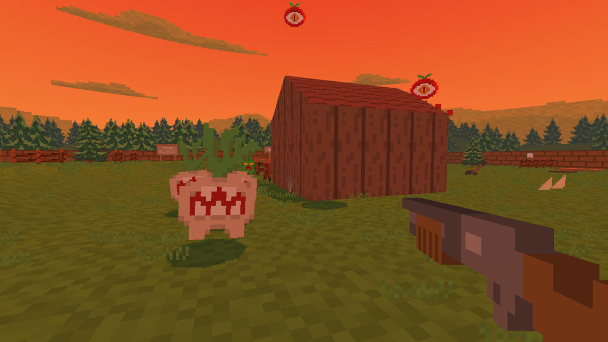
Ensimmäisen persoonan räiskintäpeli, jossa istutetut vihannekset heräävät sadonkorjuun aikaan henkiin.
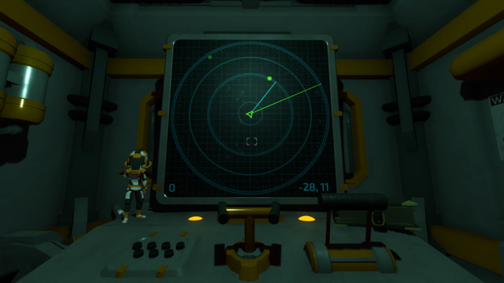
Ensimmäisen persoonan kauhupeli, jossa ohjataan avaruusalusta pelkän tutkan avulla.
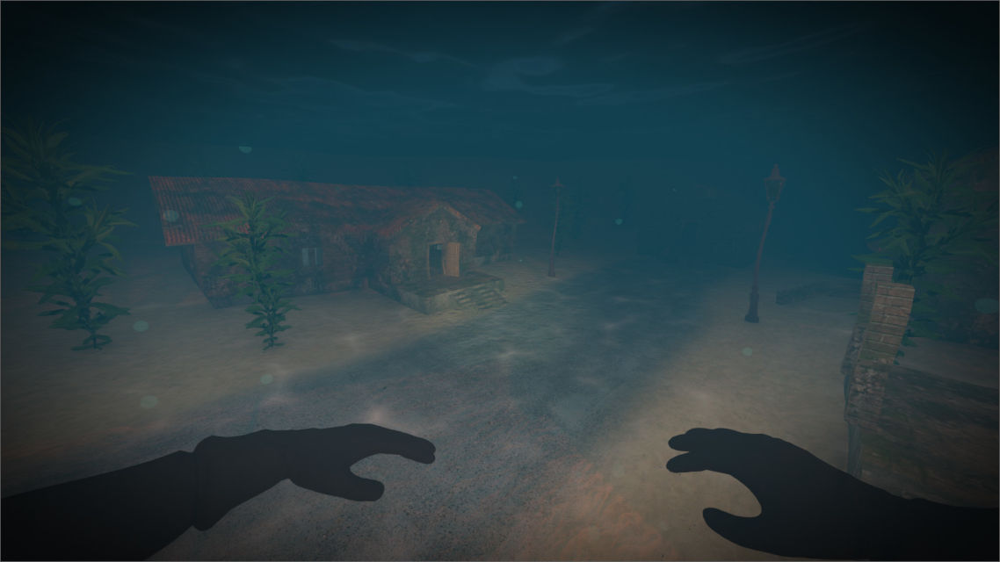
Ensimmäisen persoonan kauhupeli, jossa sukelletaan aarteita uponneesta kaupungista.
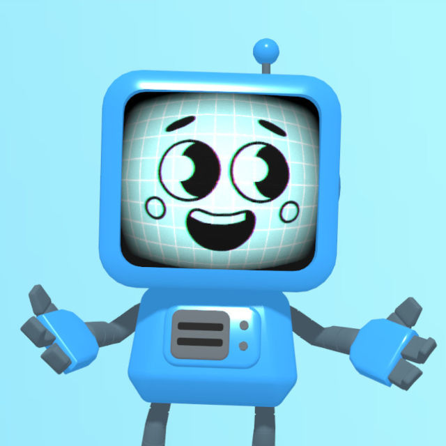
Yrittäjänä tein videomarkkinointia toiminnastani neljälle sosiaalisen median alustalle.
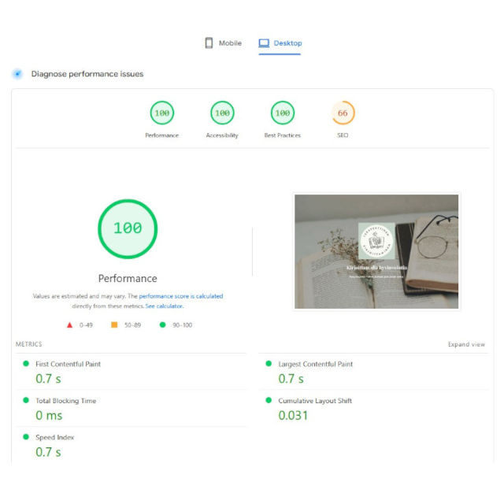
Olen toteuttanut useita projekteja verkkosivujen latausnopeuden ja virheiden korjaamisen parissa kiitettävin tuloksin.
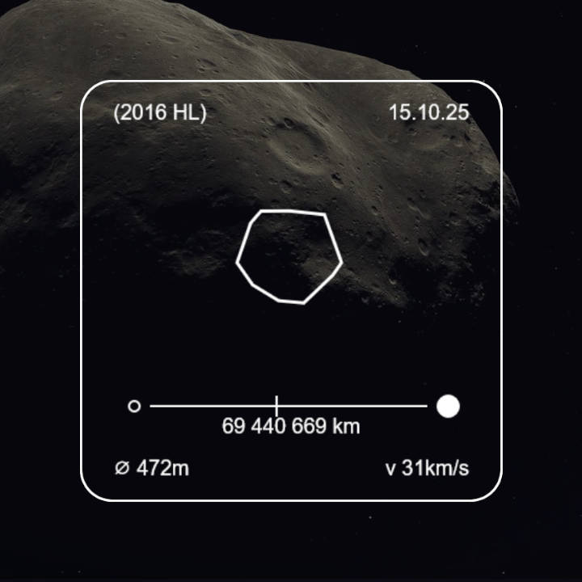
NASA:n avointa rajapintaa käyttävä verkkosovellus, joka näyttää tietoja Maan läheltä kulkevista asteroideista.